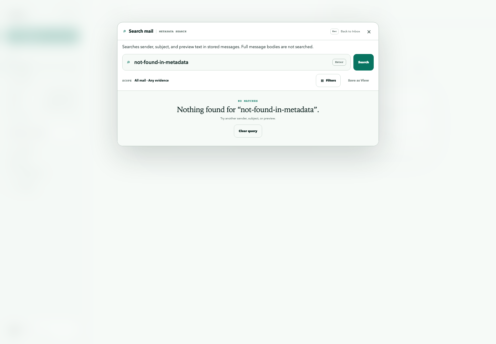
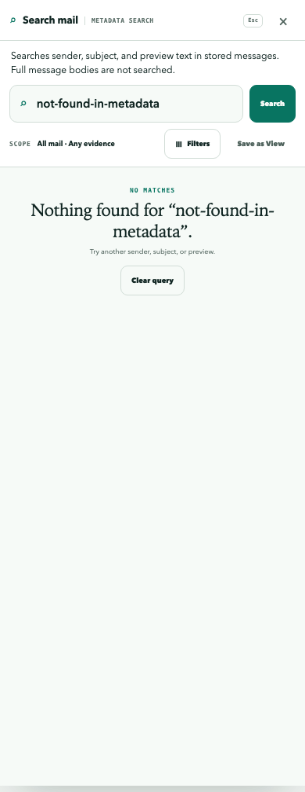
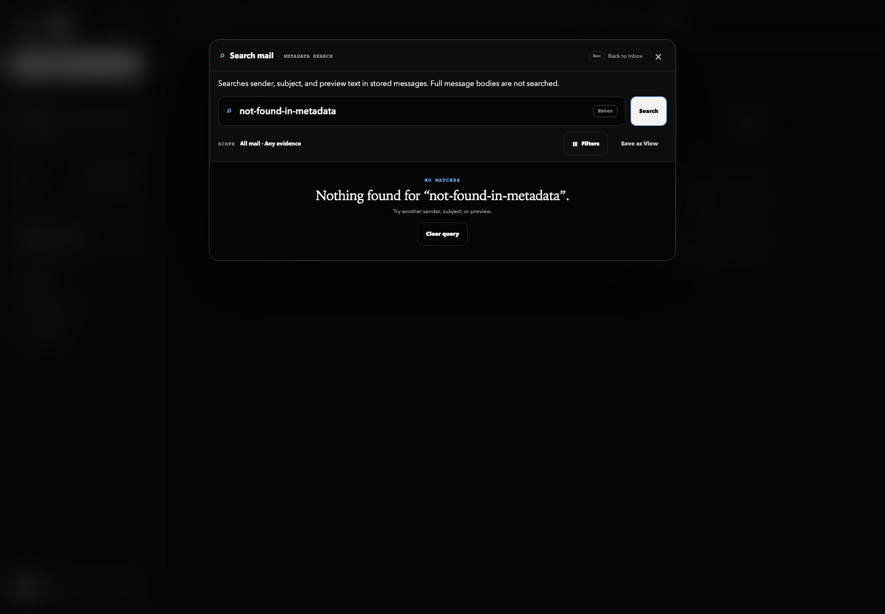
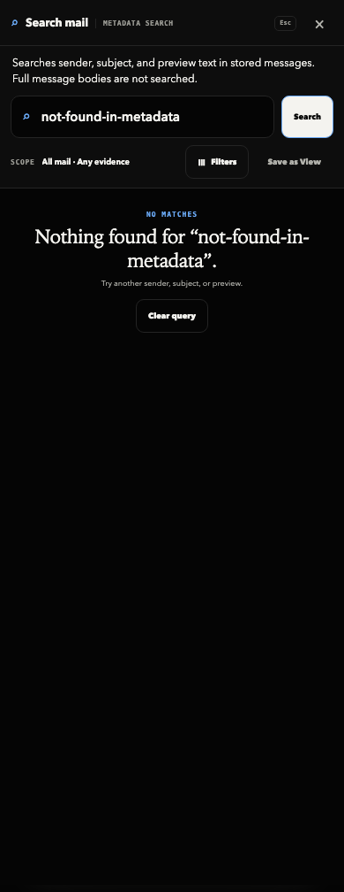

First compatibility stage · October 8, 2026 · draft, no production activation
A large stored message must not remove metadata search for its account. This stage uses the existing canonical reader and labels its actual coverage. It does not repair or activate PR 228's full-body index.
Baseline: 6ac83d1ae1bed08dd5d380774667b03d5dffe55b (main, including #229, #230, #232). Reference: draft #228 at f7fc5aef7e62d166668187bf49fd4438ff700970. This change replaces the compatibility rollout portion of #228. Its queued capture, schema, workers, ranked readers, native search changes, and historical capacity claims are not imported. The follow-up draft is the active stage-one candidate; #228 must be explicitly marked superseded as a combined rollout candidate when this draft is published.
GET /v1/inbox?searchMode=metadata uses the original canonical reader. The opt-in receipt states mode=metadata, coverage=stored-metadata, semantics=legacy-substring-v1, and fullBody=unavailable. Sender name/address, subject and preview text are searched. Bodies, HTML and attachments are not searched. Substring behavior and existing ordering are preserved; this is not ranked search.
searchMode=full returns authenticated HTTP 503 search_full_body_unavailable with availableModes=[metadata], no messages, and no automatic retry as metadata. The web client requests metadata explicitly and rejects missing/mismatched receipts before displaying or appending results. Its visible coverage label remains present during results, loading, empty and error states. This stage updates web only; iOS and MCP continue using their existing metadata contracts.
Omitting searchMode preserves the legacy response envelope, including flat counts when classification is omitted. Existing metadata cursors can continue through the explicit mode because the same reader, scope, revision and semantics apply. Later indexed cursors must use a distinct binding and never reinterpret these as full-body continuations.
| Stage | Included here? | Required gate and rollback |
|---|---|---|
| 1. Compatible API and web | Yes. Explicit metadata contract; canonical WAL/FULL. | Deploy API before web only after separate authorization. Older clients continue unchanged. Old API + new web fails visibly; do not downgrade the request silently. Roll back web before API. Preserve FULL even if reverting this feature: main currently opens NORMAL connections under Bun. |
| 2. Capture/schema migration | No schema or trigger added. No queue writes. | Separate reviewed migration and explicit capture transition. Define capture-off invalidation and capture-on rebuild from canonical truth; fence account incarnations and epochs atomically. Off/on cannot retain an apparently ready stale index. Never prune obligations silently. Test atomic capture, update/delete/account replacement, rollback and interrupted rebuild before activation. |
| 3. Index workers | No worker, scheduler, sidecar, backfill or maintenance command added. | Separate worker opt-in from capture and reads. WAL/FULL, ownership fencing, bounded retries, queue accounting and observable blocked reasons remain mandatory. Pause draining without dropping captured obligations. Rebuild requires explicit operator review. |
| 4. Indexed reads | Unavailable. Every explicit full-body request fails. | Separate read activation after scope/mode readiness and resource evidence. Keep canonical metadata available as an explicit choice, including metadata above 32 KiB. An affected full-body scope must fail clearly; do not omit accounts/messages or silently truncate. Disable reads independently from workers/capture and invalidate indexed cursors. |
| Later large-body support | Deferred. | Segmented indexing, native helpers and separate services need their own designs, cost evidence and reviews. No added complexity here. #228's account-blocking limits remain unresolved for that proposed index. |
Blast radius: inbox request/response contract, web global search, and canonical connection durability. Existing SQL filtering, counts, projection and authorization are reused. No production database was read or migrated; no credentials, release, #231 or native UI were changed. Queue capture off/on/rebuild tests are requirements for the deferred capture stage, not evidence claimed by this schema-free change.
Cost limits: no added index storage, scheduler, queue, service or full-body scan. Existing canonical metadata scan and exact-count costs remain; metadata size has no new truncation/admission cap, so this is not a hard memory or latency bound. FULL can add fsync latency to canonical writes. These small fixtures are correctness evidence, not production capacity evidence. No unrestricted stress run or previously denied #224 validation was attempted. Resource-heavy work was paused when requested.
Independent correctness and scoped security review results belong to the draft PR's immutable-head review record. No formal security clearance is implied by the tests. Production migration, enablement, merge and release remain unauthorized.



